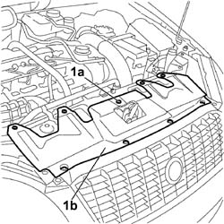

7040D30 ENGINE BAY FRONT BEAM COVER - R R
- Path
- Procedures > 70 FITTINGS > 7040 BODY INTERIOR FITTINGS AND TRIM > 7040D ENGINE BAY LINING > 7040D30 ENGINE BAY FRONT BEAM COVER - R R
- Kind
- repair procedure (removal / refitting; the operation number is the code)
- Applies to
- all engines; all production periods
- Interactive page
- https://sloeber94.github.io/elrnDB-fCrm/en/#/194001047
Applies to: all engines; all production periods
 Removing
Removing
 Refitting
Refitting- Open the bonnet.
1. Undo the bolts (1a) fixing the front crossmember cover (1b) and remove it from the vehicle.

Applies to: all engines; all production periods
Refitting
Removing- Tighten the bolts fixing the front crossmember cover.
Topics that link to this page (36)
- 1020D38 FLYWHEEL SIDE OIL SEAL - REPLACE
- 1048A23 COLD AIR INTAKE FOR AIR FILTER - R.R
- 1048B10 RIGID SUPPLY PIPE (ONE) BETWEEN TURBOCHARGER AND HEAT EXCHANGER -R.R.
- 1048B14 AIR DELIVERY HOSE BETWEEN TURBOCHARGER AND HEAT EXCHANGER - REPLACE
- 1048B50 TURBOCHARGER INTERCOOLER - R + R
- 1084C34 ENGINE OIL COOLING RADIATOR - R + R
- 1084C36 ENGINE OIL COOLING RADIATOR SUPPORT BRACKET - R + R
- 1084C40 AIR DUCT FOR ENGINE OIL COOLING RADIATOR - R.R.
- 1088B20 ENGINE COOLING RADIATOR - R + R
- 1088B26 AIR DUCT ON RADIANT MASS - R.R.
- 1088E11 FANS WITH SINGLE ENGINE DUCT - R+R
- 1810A20 CLUTCH - R + R
- 2110A10 MANUAL GEARBOX AND DIFFERENTIAL - R + R
- 2130A22 COOLING RADIATOR OF AUTOMATIC TRANSMISSION HYDRAULIC CIRCUIT - R + R - INCLUDING FLUID LEVEL TOP UP IF NECESSARY
- 5040A40 AIR CONDITIONING CONDENSER - R+R
- 5040A44 AIR CONDITIONING DRIER FILTER/ACCUMULATOR - R+R
- 5040A56 LINE FROM DEHYDRATING - R R
- 5040A74 TANDEM PIPE FOR DELIVERY AND RETURN TO AIR CONDITIONING COMPRESSOR - R.R.
- 5040A82 PIPE FROM COMPRESSOR TO CONDENSER AND EXPANSION VALVE FITTING R R
- 5530A10 ALTERNATOR - R+R
- 5540B24 MAIN BEAM BULB (ONE) FOR ONE HEADLAMP/LIGHT CLUSTER LH OR RH - R.R
- 5540B25 LOW BEAM BULB (ONE) FOR ONE HEADLAMP/LIGHT CLUSTER LH OR RH - R.R
- 5540B26 BULB (ONE) FOR SIDE LIGHT FOR ONE HEADLAMP/LIGHT CLUSTER, L/H OR R/H - R+R
- 5540B28 BULB (ONE) FOR FRONT DIRECTION INDICATOR IN HEADLAMP/LIGHT CLUSTER, LH OR RH - R.R
- 5540B42 CONTROL UNIT OF ONE GAS DISCHARGE LIGHT CLUSTER R R
- 5540B44 DIPPED BEAM FOR ONE GAS DISCHARGE LIGHTING UNIT ONE LH OR RH R R
- 5540B61 <x>TURN SIGNAL BULB IN ONE GAS DISCHARGE LIGHT CLUSTER (ONE), LH OR RH - R&R</x>
- 5540B70 LEFT FRONT LIGHT CLUSTER WITH DIRECTION INDICATOR - R.R.
- 5540B71 RIGHT FRONT LIGHT CLUSTER WITH DIRECTION INDICATOR - R.R.
- 7025A26 BONNET LID OPENING CONTROL - R.R.
- 7025A28 BONNET LID OPENING CABLE - R R
- 7025A34 BONNET LID LOCK (ONE) - R+R OR REPAIR
- 7055A43 CENTRE FRONT GRILLE - R.R.
- 7055A84 FRONT BADGE ON BONNET LID OR RADIATOR BADGE - R.R.
- 7205E10 STRIPPING FRONT BUMPER
- 7210E10 R.R. FRONT BUMPER